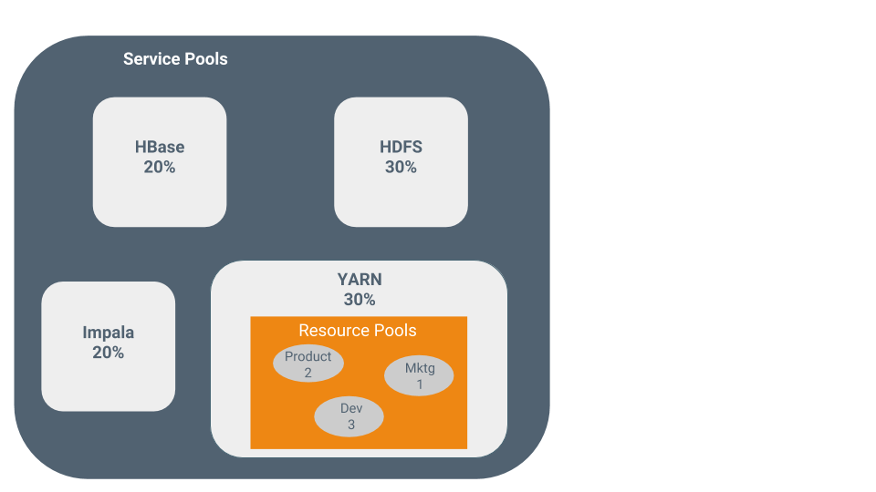

Resource Management
- Guarantee completion in a reasonable time frame for critical workloads.
- Support reasonable cluster scheduling between groups of users based on fair allocation of resources per group.
- Prevent users from depriving other users access to the cluster.
Statically allocating resources using cgroups is configurable through a single static service pool wizard. You allocate services as a percentage of total resources, and the wizard configures the cgroups.
Static service pools isolate the services in your cluster from one another, so that load on one service has a bounded impact on other services. Services are allocated a static percentage of total resources—CPU, memory, and I/O weight—which are not shared with other services. When you configure static service pools, Cloudera Manager computes recommended memory, CPU, and I/O configurations for the worker roles of the services that correspond to the percentage assigned to each service. Static service pools are implemented per role group within a cluster, using Linux control groups (cgroups) and cooperative memory limits (for example, Java maximum heap sizes). Static service pools can be used to control access to resources by HBase, HDFS, Impala, MapReduce, Solr, Spark, YARN, and add-on services. Static service pools are not enabled by default.
For example, the following figure illustrates static pools for HBase, HDFS, Impala, and YARN services that are respectively assigned 20%, 30%, 20%, and 30% of cluster resources.

You can dynamically apportion resources that are statically allocated to YARN and Impala by using dynamic resource pools.
- YARN - YARN manages the virtual cores, memory, running applications, maximum resources for undeclared children (for parent pools), and scheduling policy for each pool. In the preceding diagram, three dynamic resource pools—Dev, Product, and Mktg with weights 3, 2, and 1 respectively—are defined for YARN. If an application starts and is assigned to the Product pool, and other applications are using the Dev and Mktg pools, the Product resource pool receives 30% x 2/6 (or 10%) of the total cluster resources. If no applications are using the Dev and Mktg pools, the YARN Product pool is allocated 30% of the cluster resources.
- Impala - Impala manages memory for pools running queries and limits the number of running and queued queries in each pool.